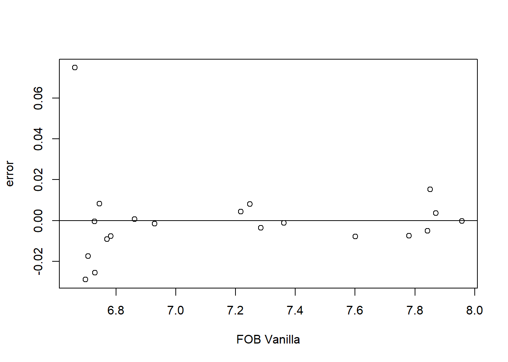
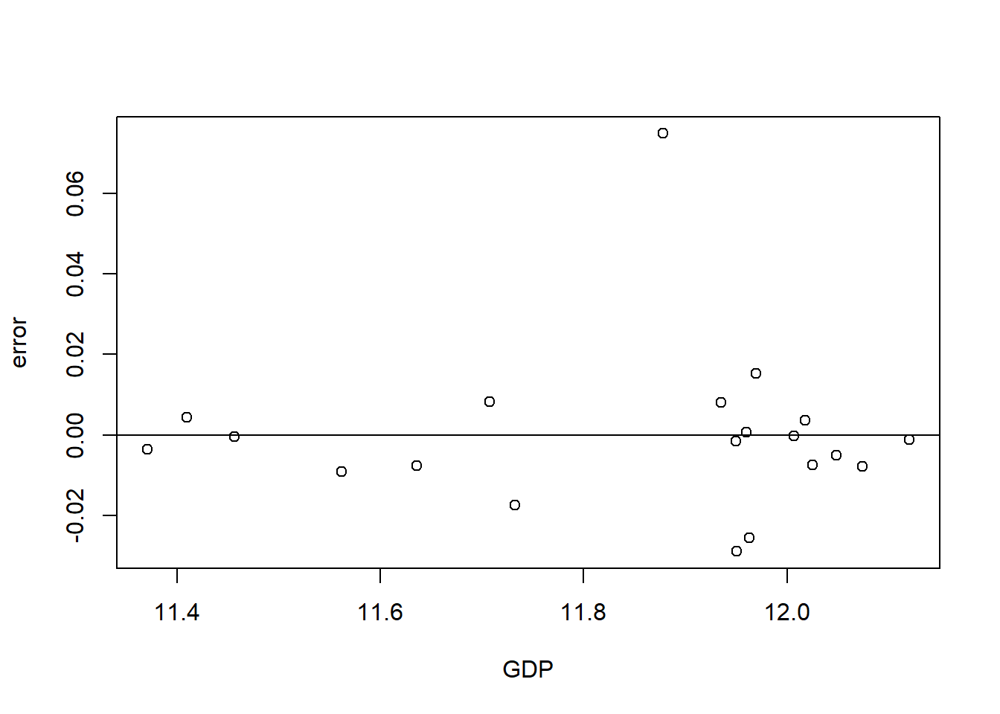
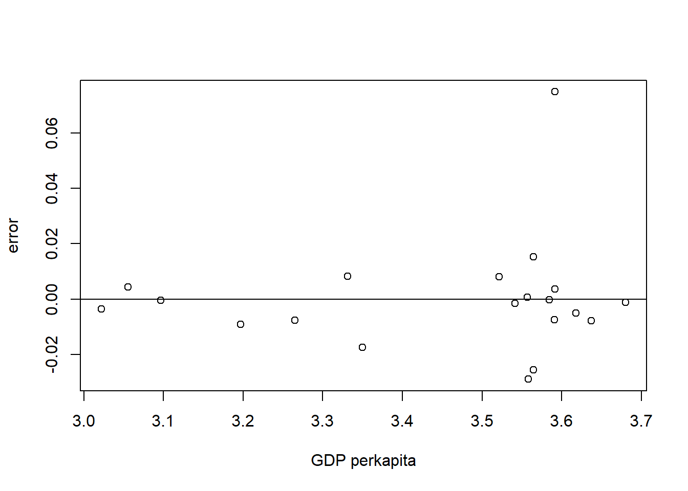

setwd("D:/METOPEL UAS/OKTA METOPEL")
library(readxl)
library(tidyverse)
library(kableExtra)Analisis Pengaruh Ekspor Vanilla Terhadap Pertumbuhan Ekonomi Indonesia.
Metode Penelitian Politeknik APP Jakarta

1 Pendahuluan
1.1 Latar belakang
Vanili adalah salah satu komoditas ekspor utama Indonesia dan memiliki nilai jual yang tinggi di pasar internasional¹⁵. Vanili, yang merupakan aroma yang dihasilkan oleh bunga vanili, dapat ditemukan dalam berbagai produk, mulai dari makanan dan minuman hingga kosmetik dan parfum¹. Meskipun vanili sintetis telah banyak digunakan sejak tahun 1980-an karena harganya yang lebih murah, permintaan vanili asli telah meningkat sejak tahun 2011 seiring industri makanan mulai mengurangi penggunaan bahan sintetis¹.
Indonesia adalah produsen vanili terbesar kedua di dunia setelah Madagaskar, dengan produksi mencapai 2.306 ton pada tahun 2020². Beberapa provinsi di Indonesia, seperti Jawa Timur, Lampung, Jawa Tengah, Jawa Barat, Sumatera Utara, dan Nusa Tenggara Timur (NTT), dikenal sebagai produsen utama vanili di negara ini³.
Di pasar global, vanili Indonesia memiliki daya saing yang kuat. Menurut Indeks Revealed Comparative Advantage (RCA), vanili Indonesia memiliki keunggulan komparatif di atas rata-rata dunia dan sangat kompetitif⁵⁸. Meskipun demikian, Indonesia masih belum mampu mengalahkan Madagaskar, pesaing utamanya, yang memiliki nilai RCA jauh di atas Indonesia⁵⁷.
Dengan demikian, vanili Indonesia memainkan peran penting di pasar global dan memiliki potensi untuk lebih meningkatkan posisinya. Namun, tantangan seperti fluktuasi harga dan persaingan dengan produsen vanili lainnya perlu diatasi untuk memastikan pertumbuhan berkelanjutan dari sektor ini.
1.2 Ruang lingkup
Penelitian ini akan fokus pada bagaimana ekspor vanili Indonesia mempengaruhi PDB dan PDB per kapita negara tersebut.
Ekspor vanili, sebagai salah satu komoditas utama Indonesia, berkontribusi signifikan terhadap PDB dan pendapatan negara. Pendapatan ini dapat digunakan untuk investasi dalam infrastruktur, pendidikan, kesehatan, dan sektor lainnya yang dapat meningkatkan produktivitas dan kualitas hidup penduduk, sehingga meningkatkan PDB per kapita.
Selain itu, ekspor vanili juga menciptakan lapangan kerja dan memfasilitasi transfer teknologi dan pengetahuan, yang dapat meningkatkan efisiensi dan produktivitas.
Analisis ini merupakan analisis multivariat yang dalam praktiknya akan menggunakan model gravity, yang mana model ini digunakan karena terdapat beberapa variabel yang tidak linear dan model ini mengusahakan agar data-data variabel tersebut dapat linear, misal dengan menggunakan log dalam prosesnya.
1.3 Rumusan masalah
Berikut adalah rumusan masalah yang dapat dijadikan acuan dalam penelitian ini:
Bagaimana pengaruh ekspor vanili terhadap PDB per kapita Indonesia? Apakah peningkatan ekspor vanili berkontribusi terhadap peningkatan PDB per kapita?
Bagaimana pengaruh PDB terhadap PDB per kapita Indonesia? Apakah peningkatan PDB secara keseluruhan berkontribusi terhadap peningkatan PDB per kapita?
Bagaimana pengaruh nilai tukar terhadap ekspor vanili, PDB, dan PDB per kapita? Apakah fluktuasi nilai tukar memiliki dampak signifikan terhadap ekspor vanili dan kinerja ekonomi secara keseluruhan?
Bagaimana interaksi antara ekspor vanili, PDB, PDB per kapita, dan nilai tukar? Apakah ada hubungan timbal balik antara variabel-variabel ini?
Rumusan masalah ini bertujuan untuk memahami dinamika ekonomi Indonesia, khususnya terkait dengan ekspor vanili, dan bagaimana variabel-variabel ini saling mempengaruhi satu sama lain dalam konteks PDB dan PDB per kapita.
1.4 Tujuan dan manfaat penelitian
Penelitian ini bertujuan untuk memahami bagaimana ekspor vanili Indonesia mempengaruhi PDB dan PDB per kapita negara tersebut. Analisis ini penting bagi pengajar dan pelajar. Bagi pengajar, hasil analisis ini dapat digunakan sebagai materi pengajaran dalam mata kuliah ekonomi, perdagangan internasional, atau mata kuliah terkait lainnya. Selain itu, analisis ini memberikan kasus nyata tentang bagaimana ekspor komoditas tertentu dapat mempengaruhi ekonomi suatu negara, yang dapat membantu dalam menjelaskan konsep teoritis. Bagi pelajar, analisis ini dapat membantu memahami konsep seperti ekspor, PDB, PDB per kapita, dan nilai tukar dalam konteks nyata. Selain itu, pelajar dapat belajar bagaimana melakukan analisis ekonomi dan bagaimana variabel-variabel ekonomi saling mempengaruhi. Akhirnya, pelajar dapat memperoleh pengetahuan tentang industri vanili dan perdagangan internasional.
1.5 Package
2 Studi pustaka
Valuta asing (foreign exchange) adalah mata uang negara lain (foreign currency) dari suatu perekonomian (Berlianta, 2004). Untuk dapat digunakan dalam kegiatan ekonomi, maka mata uang yang dipergunakan mempunyai harga tertentu dalam mata uang negara lain. Harga tersebut menggambarkan berapa banyak suatu mata uang harus dipertukarkan untuk memeroleh satu unit mata uang lain. Istilah dari rasio pertukaran ini adalah nilai tukar atau kurs (exchange rate).
Kurs dapat dijadikan alat untuk mengukur kondisi perekonomian suatu negara. Pertumbuhan nilai mata uang yang stabil menunjukkan bahwa negara tersebut memiliki kondisi ekonomi yang relatif baik. (Salvator, 1997).
(Sukirno,2022) GDP atau Gross Domestic Product adalah total nilai barang dan jasa yang diproduksi oleh suatu negara dalam jangka waktu tertentu, biasanya satu tahun. GDP dapat diukur dengan dua cara, yaitu:
Pendapatan (income approach): GDP dihitung dengan menjumlahkan pendapatan yang diterima oleh semua faktor produksi dalam perekonomian, termasuk tenaga kerja, modal, dan tanah. Pengeluaran (expenditure approach): GDP dihitung dengan menjumlahkan semua pengeluaran yang dilakukan oleh semua pelaku ekonomi, termasuk rumah tangga, perusahaan, pemerintah, dan luar negeri. Pengertian GDP Perkapita
(Sukirno,2022) GDP perkapita adalah nilai GDP per orang. GDP perkapita dapat dihitung dengan membagi GDP dengan jumlah penduduk. GDP perkapita sering digunakan sebagai indikator untuk mengukur tingkat kemakmuran dan kesejahteraan suatu negara.
Ekspor menurut keputusan mentri perindustrian dan perdagangan Nomor 182/MPP/Kep/4/1998 ketentuan umum di Bidang Ekspor, menyatakan bahwa ekspor merupakan kegiatan mengeluarkan barang dan jasa dari daerah pabean suatu negara. Adapun daerah pabean di definisikan sebagai wilayah Republik Indonesia yang meliputi wilayah darat, perairan dan ruang udara di atasnya, serta tempat-tempat tertentu di zona ekonomi eksklusif dan landas kontinen yang di dalamnya berlaku undang undang No.10 tahun 1995 tentang Kepabean.
Menurut definisi lain, ekspor merupakan penjualan barang dan jasa secara luas dari dalam negeri ke luar negeri (Mankiw, 2006).
Sedangkan menurut Priadi (2000) kegiatan ekspor merupakan sistem perdagangan yang dilakukan dengan cara mengeluarkan barang-barang dari dalam negeri ke luar negeri berdasarkan ketentuan yang berlaku.
Dikaji dari sisi manfaat, Menurut Sukirno (2010), manfaat dari kegiatan ekspor adalah : 1. Memperluas Pasar bagi Produk Indonesia ke luar negeri. 2. Menambah Devisa Negara 3. Memperluas Lapangan Kerja
Menurut Purba (2011) suatu negara cenderung mengekspor barang yang diperlukan atau tidak dapat dihasilkan negara tersebut.
Menurut Salvatore (1997) ada beberapa manfaat yang diperoleh dari perdagangan internasional yaitu: a. Suatu negara dapat memperoleh komoditas yang tidak mampu diproduksi di dalam negeri atau mengalami keterbatasan produksi. b. Suatu negara dapat memperoleh keuntungan melalui spesialisasi yaitu dapat mengekspor komoditi yang di produksi dengan harga lebih murah untuk ditukar dengan komoditi unggulan negara lain. Dengan tujuan untuk menekan biaya produksi sendiri yang mahal. c. Suatu negara dapat memperluas pasar produk, menambah pendapatan nasional, meningkatkan upah pekerja, menghasilkan devisa, serta dapat memperoleh kemajuan teknologi yang tidak tersedia di dalam negeri melalui perdagangan internasional.
3 Metode penelitian
3.1 Data
| lfob | lkurs | lgdp | lgdpp |
|---|---|---|---|
| 7,284994 | 3,927627 | 11,3706426 | 3,02201574 |
| 7,217537 | 3,968016 | 11,4096627 | 3,055760465 |
| 6,72811 | 3,972203 | 11,4561686 | 3,096562438 |
| 6,770263 | 3,955207 | 11,5617809 | 3,196728723 |
| 6,782902 | 3,974005 | 11,6357049 | 3,264817823 |
| 6,745465 | 4,039414 | 11,707766 | 3,331224781 |
| 6,706462 | 3,973128 | 11,7320558 | 3,350054094 |
| 6,662569 | 3,953808 | 11,8779987 | 3,591509809 |
| 6,698709 | 3,957512 | 11,9508369 | 3,557988148 |
| 6,729732 | 3,985426 | 11,9627812 | 3,564429327 |
| 6,862072 | 4,085968 | 11,9602424 | 3,556664262 |
| 6,930032 | 4,09482 | 11,9497851 | 3,541204691 |
| 7,248415 | 4,139722 | 11,9349275 | 3,521530341 |
| 7,850395 | 4,12827 | 11,96936 | 3,564547712 |
| 7,957028 | 4,1321 | 12,0067312 | 3,584331224 |
| 7,869414 | 4,158061 | 12,0179802 | 3,591398551 |
| 7,842672 | 4,141951 | 12,0488689 | 3,618152733 |
| 7,779943 | 4,147676 | 12,0249165 | 3,590618948 |
| 7,601299 | 4,154394 | 12,0742714 | 3,636888907 |
| 7,361445 | 4,184379 | 12,1202777 | 3,680154142 |
Penelitian ini menggunakan data time series yang kemudian diproses menggunakan metode regresi multivariat untuk melihat hubungan antara variabel dependent (PDB Per Kapita) dan independent (Nilai Ekspor Vanilla, PDB, serta Kurs Rp/Dolar.)
3.2 Metode analisis
Metode yang dipilih adalah regresi Multivariat dengan lebih dari satu variabel independen. Penelitian ini dimaksudkan untuk mencari ada atau tidaknya hubungan antar variabel, sebepara pengaruh yang diberikan, dan tingkat signifikasi variabel tersebut.
Spesifikasi yang dilakukan adalah:
\[ lnY=\beta_0 + \beta_1 lnX1+\beta_2 lnX2+\beta_3 lnX3. \]
di mana \(Y\)=PDB perkapita, \(X1\) = FOB Vanilla dan \(X2\)= PDB, \(X3\)= Kurs/Nilai Tukar IDR/USD .
4 Pembahasan
4.1 Pembahasan masalah
Pada bagian ini dapat ditampilkan data dan visualisasi data yang telah dikumpulkan.
#impor dataset
read_excel("vanila2.xlsx")New names:
• `` -> `...10`# A tibble: 20 × 10
Tahun fob kurs lfob lkurs gdp gdpp lgdp lgdpp ...10
<dbl> <dbl> <dbl> <dbl> <dbl> <dbl> <dbl> <dbl> <dbl> <chr>
1 2003 19275000 8465 7.28 3.93 234770000000 1052 11.4 3.02 4.78%
2 2004 16502000 9290 7.22 3.97 256840000000 1137 11.4 3.06 5.03%
3 2005 5347000 9380 6.73 3.97 285870000000 1249 11.5 3.10 5.69%
4 2006 5892000 9020 6.77 3.96 364570000000 1573 11.6 3.20 5.50%
5 2007 6066000 9419 6.78 3.97 432220000000 1840 11.6 3.26 6.35%
6 2008 5565000 10950 6.75 4.04 510230000000 2144 11.7 3.33 6.01%
7 2009 5087000 9400 6.71 3.97 539580000000 2239 11.7 3.35 4.63%
8 2010 4598000 8991 6.66 3.95 755090000000 3904 11.9 3.59 6.22%
9 2011 4997000 9068 6.70 3.96 892970000000 3614 12.0 3.56 6.17%
10 2012 5367000 9670 6.73 3.99 917870000000 3668 12.0 3.56 6.03%
11 2013 7279000 12189 6.86 4.09 912520000000 3603 12.0 3.56 5.56%
12 2014 8512000 12440 6.93 4.09 890810000000 3477 11.9 3.54 5.01%
13 2015 17718000 13795 7.25 4.14 860850000000 3323 11.9 3.52 4.88%
14 2016 70859000 13436 7.85 4.13 931880000000 3669 12.0 3.56 5.03%
15 2017 90579000 13555 7.96 4.13 1015620000000 3840 12.0 3.58 5.07%
16 2018 74031000 14390 7.87 4.16 1042270000000 3903 12.0 3.59 5.17%
17 2019 69610000 13866 7.84 4.14 1119100000000 4151 12.0 3.62 5.02%
18 2020 60248000 14050 7.78 4.15 1059050000000 3896 12.0 3.59 -2.07%
19 2021 39930000 14269 7.60 4.15 1186510000000 4334 12.1 3.64 3.70%
20 2022 22985000 15289 7.36 4.18 1319100000000 4788 12.1 3.68 5.31% dat <- read_excel("vanila2.xlsx")New names:
• `` -> `...10`kbl(dat) %>%
kable_styling(bootstrap_options = c("striped", "hover", "condensed", "responsive"))| Tahun | fob | kurs | lfob | lkurs | gdp | gdpp | lgdp | lgdpp | ...10 |
|---|---|---|---|---|---|---|---|---|---|
| 2003 | 19275000 | 8465 | 7.284994 | 3.927627 | 2.34770e+11 | 1052 | 11.37064 | 3.022016 | 4.78% |
| 2004 | 16502000 | 9290 | 7.217537 | 3.968016 | 2.56840e+11 | 1137 | 11.40966 | 3.055760 | 5.03% |
| 2005 | 5347000 | 9380 | 6.728110 | 3.972203 | 2.85870e+11 | 1249 | 11.45617 | 3.096562 | 5.69% |
| 2006 | 5892000 | 9020 | 6.770263 | 3.955207 | 3.64570e+11 | 1573 | 11.56178 | 3.196729 | 5.50% |
| 2007 | 6066000 | 9419 | 6.782902 | 3.974005 | 4.32220e+11 | 1840 | 11.63570 | 3.264818 | 6.35% |
| 2008 | 5565000 | 10950 | 6.745465 | 4.039414 | 5.10230e+11 | 2144 | 11.70777 | 3.331225 | 6.01% |
| 2009 | 5087000 | 9400 | 6.706462 | 3.973128 | 5.39580e+11 | 2239 | 11.73206 | 3.350054 | 4.63% |
| 2010 | 4598000 | 8991 | 6.662569 | 3.953808 | 7.55090e+11 | 3904 | 11.87800 | 3.591510 | 6.22% |
| 2011 | 4997000 | 9068 | 6.698709 | 3.957511 | 8.92970e+11 | 3614 | 11.95084 | 3.557988 | 6.17% |
| 2012 | 5367000 | 9670 | 6.729732 | 3.985426 | 9.17870e+11 | 3668 | 11.96278 | 3.564429 | 6.03% |
| 2013 | 7279000 | 12189 | 6.862072 | 4.085968 | 9.12520e+11 | 3603 | 11.96024 | 3.556664 | 5.56% |
| 2014 | 8512000 | 12440 | 6.930032 | 4.094820 | 8.90810e+11 | 3477 | 11.94979 | 3.541205 | 5.01% |
| 2015 | 17718000 | 13795 | 7.248415 | 4.139722 | 8.60850e+11 | 3323 | 11.93493 | 3.521530 | 4.88% |
| 2016 | 70859000 | 13436 | 7.850395 | 4.128270 | 9.31880e+11 | 3669 | 11.96936 | 3.564548 | 5.03% |
| 2017 | 90579000 | 13555 | 7.957027 | 4.132099 | 1.01562e+12 | 3840 | 12.00673 | 3.584331 | 5.07% |
| 2018 | 74031000 | 14390 | 7.869414 | 4.158061 | 1.04227e+12 | 3903 | 12.01798 | 3.591399 | 5.17% |
| 2019 | 69610000 | 13866 | 7.842672 | 4.141951 | 1.11910e+12 | 4151 | 12.04887 | 3.618153 | 5.02% |
| 2020 | 60248000 | 14050 | 7.779943 | 4.147676 | 1.05905e+12 | 3896 | 12.02492 | 3.590619 | -2.07% |
| 2021 | 39930000 | 14269 | 7.601299 | 4.154394 | 1.18651e+12 | 4334 | 12.07427 | 3.636889 | 3.70% |
| 2022 | 22985000 | 15289 | 7.361445 | 4.184379 | 1.31910e+12 | 4788 | 12.12028 | 3.680154 | 5.31% |
reg1<-lm(lgdpp~lfob++lgdp+lkurs,data=dat)dat$m<-resid(reg1)
plot(dat$lfob,dat$m,xlab="FOB Vanilla",ylab="error")
abline(h=0) # membuat garis horizontal di y=0
dat$m<-resid(reg1)
plot(dat$lgdp,dat$m,xlab="GDP",ylab="error")
abline(h=0)
dat$m<-resid(reg1)
plot(dat$lgdpp,dat$m,xlab="GDP perkapita",ylab="error")
abline(h=0)
dat$m<-resid(reg1)
plot(dat$lkurs,dat$m,xlab="Nilai Tukar IDR/USD",ylab="error")
abline(h=0)
4.2 Analisis masalah
Hasil regresinya adalah
reg1<-lm(data=dat,lgdpp~lfob+lgdp+lkurs) #Y~X+S
summary(reg1)
Call:
lm(formula = lgdpp ~ lfob + lgdp + lkurs, data = dat)
Residuals:
Min 1Q Median 3Q Max
-0.028886 -0.007661 -0.001308 0.003826 0.074855
Coefficients:
Estimate Std. Error t value Pr(>|t|)
(Intercept) -6.89535 0.28741 -23.991 5.69e-14 ***
lfob -0.00249 0.01729 -0.144 0.8873
lgdp 0.98103 0.03699 26.522 1.19e-14 ***
lkurs -0.30958 0.13152 -2.354 0.0317 *
---
Signif. codes: 0 '***' 0.001 '**' 0.01 '*' 0.05 '.' 0.1 ' ' 1
Residual standard error: 0.02247 on 16 degrees of freedom
Multiple R-squared: 0.9904, Adjusted R-squared: 0.9886
F-statistic: 550.8 on 3 and 16 DF, p-value: 2.379e-16Dari hasil regresi yang di tampilkan, dimana R-squared menunjukan hasil 0.9904, yang artinya angka tersebut mengandung makna bahwa X1, X2,dan X3 secara simultan berpengaruh terhadap Y sebesar 99,04%. Sedangkan 0,96% sisanya dipengaruhi oleh variabel lain di luar persamaan ini.
Kemudian, besaran nilai yang tertera pada FOB Vanilla, dapat diartikan sebagai setiap ekspor vanila sebesar 1% akan mengakibatkan penurunan GDP perkapita sebesar -0,00249%,berpengaruh negatif tidak signifikan.
pada variabel GDP, dapat dijelaskan tiap peningkatan GDP sebesar 1% akan mengakibatkan kenaikan GDP perkapita sebesar 0,98103%, berpengaruh positif signifikan.
Terakhir pada variabel nilai tukar, menunjukan hasil negatif signifikan, dimana setiap kenaikan kurs sebesar 1% akan mengakibatkan GDP perkapita turun sebersar -0,30958%
5 Kesimpulan
Kesimpulan dari analisis ini adalah banyak faktor yang mempengaruhi GDP perkapita suatu negara, dimana salah satu faktor tersebut adalah kondisi ekspor dari negara yang di analisis.
Pada analisis kali ini, komoditas yang dipilih adalah Vanilla yang justru berpengaruh negatif walaupun tidak signifikan. Hal ini terjadi sebab komoditas ini merupakan komoditas yang harga jualnya mengikuti pergerakan kurs atau nilai tukar suatu negara, sama halnya dengan minyak, emas, dan bahan tambang lainnya. Maka dari itulah komoditas ini juga di sebut sebagai emas hijau nusantara.
Namun tidak menutup kemungkinan bilamana komoditas yang ingin di analisis berbeda dengan apa yang di jadikan bahan saat ini (Vanilla), tentu hasilnya pun akan berbeda.
Hal yang jelas dapat dibuktikan pada analisis ini adalah hubungan antara GDP dengan GDP perkapita yang signifikan, karena hubungan kedua variabel tersebut merupakan sesuatu yang tidak dapat terpisahkan dimana GDP perkapita sumbernya berasal dari GDP dibagi total populasi negara tersebut.
6 Referensi
Daya Saing Komoditas Vanili Indonesia di Pasar Internasional. https://www.jepa.ub.ac.id/index.php/jepa/article/view/1204.
ANALISIS KINERJA PERDAGANGAN DAN DAYA SAING KOMODITAS VANILI INDONESIA …. https://jurnal.uns.ac.id/agrista/article/view/63830.
DAYA SAING KOMODITAS VANILI INDONESIA DI PASAR INTERNASIONAL. https://jepa.ub.ac.id/index.php/jepa/article/download/1204/510.
ANALISIS KINERJA PERDAGANGAN DAN DAYA SAING KOMODITAS VANILI INDONESIA …. https://jurnal.uns.ac.id/agrista/article/download/63830/36338.
http://database.pertanian.go.id/eksim2012/hasilekspornegaratujuan.php.
http://www.fao.org/faostat/en/.
Pengantar Ekonomi Makro oleh Sadono Sukirno, Edisi Keempat (2023)
Ekonomi Makro oleh Sadono Sukirno dan Sadono Anwar, Edisi Ketiga (2022)
Ekonomi Makro oleh Mankiw, Gregory N., Edisi Keempat (2022)